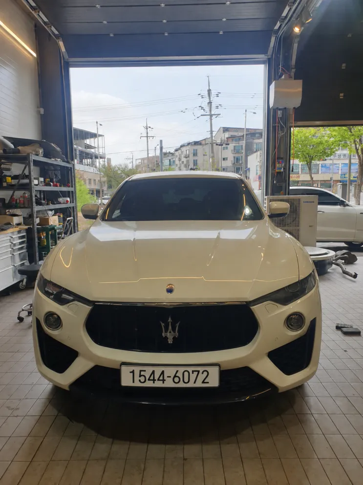
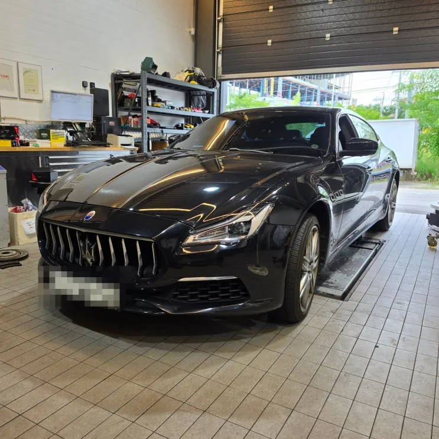
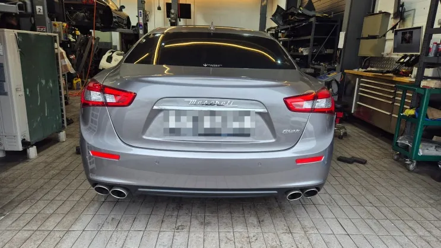
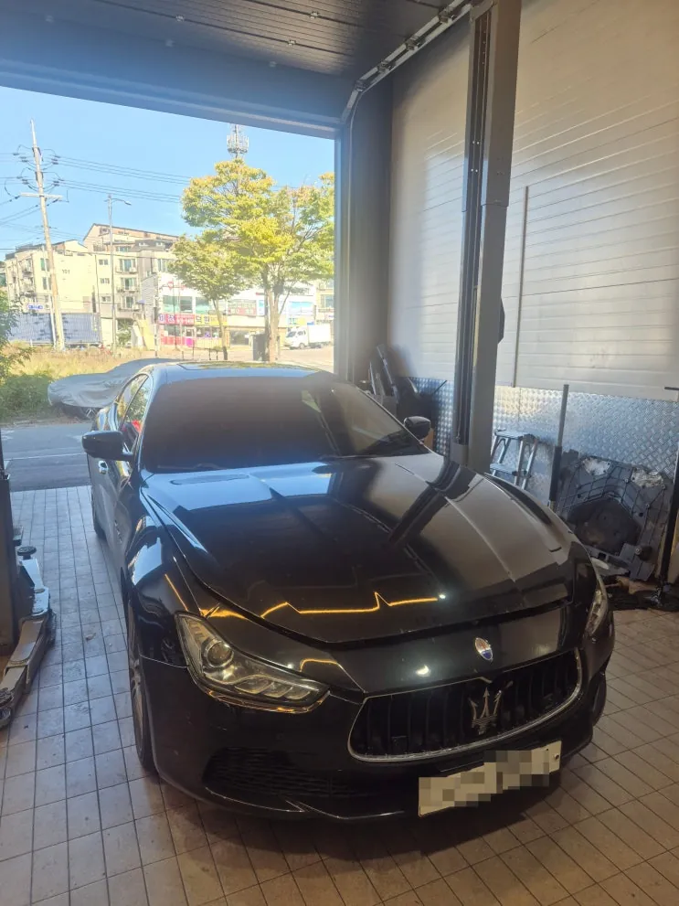
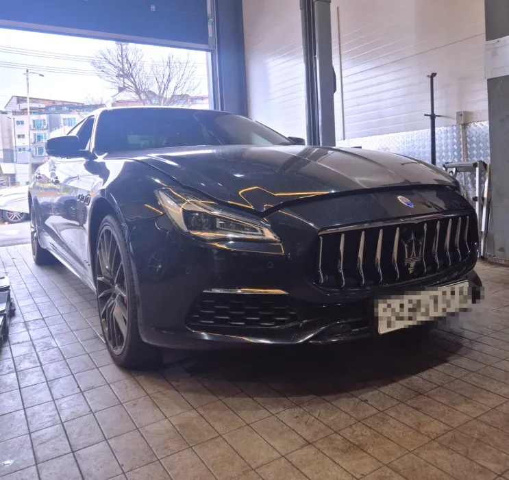

마세라티 정비
마세라티 정비 마세라티 콰트로포르테
콰트로포르테 헤드커버 오일 누유 — 헤드커버 가스켓·점화플러그 교환
헤드커버 가스켓 교환 · 플러그홀 오링·솔레노이드 오링 교환 · 점화플러그 교환
Case Study · Maserati & Ferrari
기블리, 르반떼, 콰트로포르테, 그란투리스모 등 마세라티의 실제 정비 기록입니다. 엔진·미션·냉각·하체·전장 등 증상별로 어떤 순서로 원인을 찾고 무엇을 고쳤는지 정리했습니다. 비슷한 증상이 있다면 사진을 카톡으로 먼저 보내 주세요.
16건의 기록
마세라티 정비 마세라티 콰트로포르테
헤드커버 가스켓 교환 · 플러그홀 오링·솔레노이드 오링 교환 · 점화플러그 교환
 마세라티 정비
마세라티 정비 마세라티 콰트로포르테
엔진오일 교환 · 오일필터 교환 · 에어필터 교환
 마세라티 정비
마세라티 정비 마세라티 기블리
뒷좌석 시트 탈거 · 저압 연료펌프 점검 · 저압 연료펌프 교환
 마세라티 정비
마세라티 정비 마세라티 르반떼
리어 하체 점검 · 리어 스태빌라이저 교환 · 토우로드 교환

마세라티 정비마세라티 르반떼
에어컨 냉매 회수 · 엔진 탈거 · 실린더 헤드 가스켓 교환

마세라티 정비마세라티 콰트로포르테
하부 점검 · 디퍼런셜 마운트 교환 · 앞 브레이크 디스크·패드 교환

마세라티 정비마세라티 기블리
입고 외관 4면 촬영 · 전반 점검 · 인테이크 스페이서 교체

마세라티 정비마세라티 기블리
V벨트 교체 · 아이들 베어링 2개 교체 · 텐셔너 교체
 마세라티 정비
마세라티 정비 마세라티 그란투리스모
흡기 라인 탈거 · 서모스탯 교체 · 냉각수 전체 교환
 마세라티 정비
마세라티 정비 마세라티 콰트로포르테
입고 차량 4면 사진 기록 · 진단기 점검 · 서모스탯 교체(정품)
 마세라티 정비
마세라티 정비 마세라티 콰트로포르테
엔진룸·하체 기본 점검 · V벨트 세트 교환 · 스로틀바디 세척
 마세라티 정비
마세라티 정비 마세라티 콰트로포르테
파워스티어링 펌프 교체 · 파워스티어링 오일 교환·에어 제거 · 호스 연결부 점검

마세라티 정비마세라티 콰트로포르테 GTS
엔진룸 2차 손상 점검 · 끊어진 벨트 제거 · V벨트 교체
 마세라티 정비
마세라티 정비 마세라티 르반떼
정밀 누유 점검 · 전방 리테이너 교환 · 트랜스미션 씰 교환
 마세라티 정비
마세라티 정비 마세라티 기블리
입고 차량 4면 사진 기록 · 쇼크업소버 교환 · 로우암 교환
 마세라티 정비
마세라티 정비 마세라티 르반떼
입고 점검 · 중간 머플러 탈거 · 미션 탈거
Consultation
차종·연식과 증상 사진을 보내 주시면 비슷한 사례와 함께 안내해 드립니다. 전국 탁송 상담 가능.